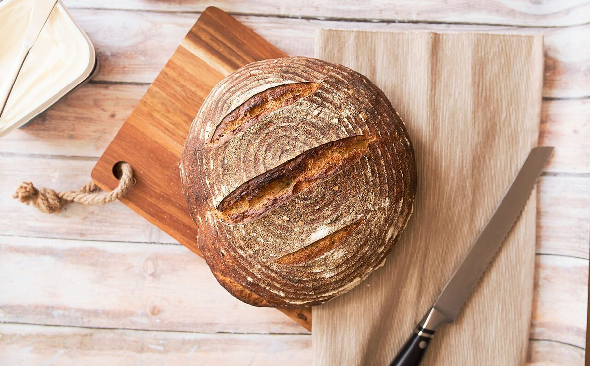

三面
品書き
メニュー・価格・提供内容は確認中のため、すべて準備中です。ここには空欄の枠だけを置いています。
「朝の品書き」「夕の品書き」は紙面を分けるための見出しで、時間帯ごとの提供があるという意味ではありません。



上の写真は、パンのイメージとして選んだ国外・撮影地不明のフリー素材です。実際の商品ではありません。

三面
メニュー・価格・提供内容は確認中のため、すべて準備中です。ここには空欄の枠だけを置いています。
「朝の品書き」「夕の品書き」は紙面を分けるための見出しで、時間帯ごとの提供があるという意味ではありません。

上の写真は、パンのイメージとして選んだ国外・撮影地不明のフリー素材です。実際の商品ではありません。